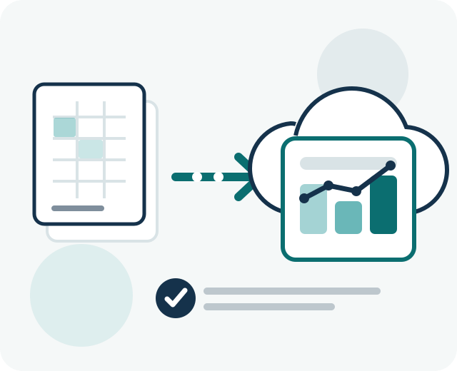

地域の中小企業に寄り添う
愛知県・名古屋市周辺の企業を対象に、会社の規模や現場の進め方に合わせて支援します。
アスノテ名古屋は、愛知県・名古屋市周辺の中小企業に向けて、Excelや紙を使った業務の見直し、クラウドサービスの導入、日々のIT相談を支援します。
ITのお悩みを相談する
私たちの姿勢
愛知県・名古屋市周辺の企業を対象に、会社の規模や現場の進め方に合わせて支援します。
ITに詳しい担当者がいなくても判断できるよう、選択肢と違いをわかりやすい言葉で説明します。
導入して終わりではなく、実際に使い続けられるかを確認しながら改善を重ねます。
相談しやすさ
「毎月の集計を少し楽にしたい」といった、具体化の途中にある相談にも対応します。
今の業務をすべて変えるのではなく、負担と効果を確認しながら取り組む範囲を決めます。
使い始めてから生まれた疑問や改善点も、継続的な相談を通じて一緒に整理します。
ご相談から運用まで
現在のお困りごとや業務の進め方を伺います。相談内容が整理できていなくても問題ありません。
優先したい課題と必要な機能を整理し、進め方、範囲、費用をご提案します。
業務の見直しやツールの設定を行い、実際の利用に向けた準備を進めます。
利用状況を確認し、現場で無理なく続けられるよう必要な調整や改善を行います。
最新情報
アスノテ名古屋からのご案内です。
FAQ
ご相談前によくいただく質問をまとめました。
はい。課題や依頼内容が決まっていない段階でもご相談いただけます。現在の業務で時間がかかっていることや、不便に感じていることを伺い、取り組む必要があるかを一緒に整理します。
Excel帳票や紙の申請、手作業の集計、ファイル共有、クラウドサービスの選定・初期設定、日々のIT運用などをご相談いただけます。独自システム開発など対応範囲外の場合は、確認後にその旨をご案内します。
愛知県・名古屋市周辺を中心に対応します。所在地や相談内容により訪問可否が異なるため、詳しくはお問い合わせ時にご確認ください。
対象業務や設定内容によって異なります。初回ヒアリング後に、取り組む範囲とおおよその期間をご案内します。小規模な見直しから段階的に進めることも可能です。
はい。「毎月の集計表を整理したい」「ファイルの保存ルールを決めたい」といった小さな課題から対応します。費用と効果を確認し、無理のない範囲をご提案します。
はい。利用開始後の疑問、設定変更、活用方法の見直しにも対応します。継続的な相談をご希望の場合は、IT定期相談・運用サポートをご案内します。
お問い合わせ
まだ課題が整理できていなくても大丈夫です。今のお困りごとを伺い、無理のない進め方を一緒に考えます。